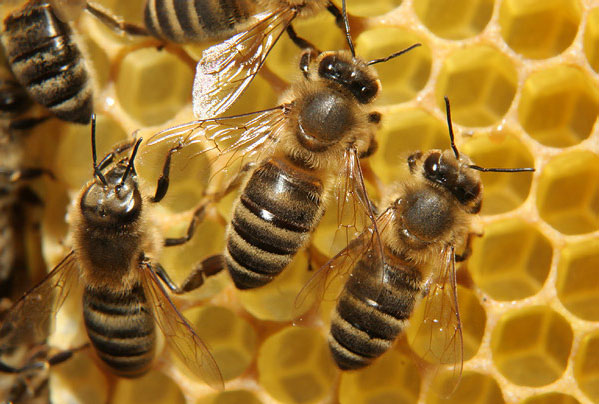

Сбор мёда самостоятельно
Медоно́сная пчела́ (лат. Ápis melliféra) — вид общественных пчёл семейства Apidae подсемейства Apinae. С древних времён люди разводят медоносных пчёл для получения продуктов пчеловодства: воска, мёда, яда, прополиса, перги и других. С развитием сельского хозяйства росла роль пчёл как естественных опылителей растений (в том числе распространилось опыление культур пчёлами в теплицах).
Русское слово пчела восходит к праслав. *bъčela или *bьčela. Каждая форма этимологизируется по-своему: *bъčela связывается со звукоподражательным *bučati «жужжать», в то время как праформу *bьčela соотносят с праиндоевропейской основой *bhei-, к которой возводят названия пчёл и в других индоевропейских языках (ирл. bech «пчела», лат. fūcus «трутень», лит. bìtė, прусск. bitte, латыш. bitе «пчела», др.-в.-нем. bîа, bini, нем. Biene, англ. bee «пчела»)
Мёд - лучшее лекарство!
Медоносная пчела стала третьим после дрозофилы и комара насекомым, геном которого известен. Он содержит около 300 млн пар оснований ДНК[5]. Согласно результатам первых исследований, этот вид возник в Африке, а затем мигрировал в Европу двумя волнами[6]. Однако более позднее изучение генома пчёл по всему миру показало[7], что они прибыли из Азии примерно 300 тыс. лет назад и быстро распространились по Европе и Африке[8]. В целом по миру был выявлен высокий уровень генетического разнообразия, однако, в некоторых регионах колонии пчёл вымирают из-за инбридинга (близкородственного скрещивания)[8].
Покупайте наш мёд
Тело состоит из трёх частей: головы, груди и брюшка. Опорой тела служит его наружный экзоскелет — кутикула. Снаружи тело покрыто волосками, выполняющими функции органов осязания и защищающими покров от загрязнений. Части тела соединены между собой тонкими эластичными перепонками кутикулы. На голове расположены два больших сложных и три простых глаза. Сложные глаза состоят из большого количества фасеток и расположены по бокам головы, а простые — на темени (у трутня простые глаза несколько сдвинуты на лоб).
Не стоит бояться пчёл
Внутри головы находится внутренний скелет (тенториум). Это прочные хитиновые балки, идущие от передней стенки головы к задней и придающие необходимую прочность головной капсуле, особенно её нижней части. К ним прикреплены мышцы, которые обеспечивают движения головы, верхних челюстей и хоботка, а также служат опорой для некоторых внутренних органов.
Каждый усик состоит из основного членика и одного длинного жгутика, состоящего у трутня из двенадцати одинаковых члеников, а у самок — из одиннадцати. Спереди рот прикрывает узкая хитиновая полоска — верхняя губа, а с боков расположены верхние челюсти — жвалы. Сильно сдвинутая нижняя губа вместе с парой нижних челюстей образует хоботок. Брюшко самок делится на шесть члеников (сегментов), а у трутня — на семь.
Пищеварительная система пчёл состоит из трёх отделов, соединённых между собой. В первый отдел входят глотка, пищевод и медовый зобик. Глотка находится в голове и является расширенной частью передней кишки. Глотка сужается в пищевод, который проходит через грудь до передней части брюшка, где расширяется и образует медовый зобик. Объём пустого медового зобика составляет 14 мм³, но при заполнении мёдом или нектаром может увеличиваться в 3—4 раза.
С помощью мускулов, имеющихся в зобике, находящийся в нём мёд или нектар может через пищевод и хоботок выдавливаться наружу. Второй отдел (средняя кишка) находится за медовым зобиком и служит основным органом пищеварения. В состав третьего отдела (задняя кишка) входят тонкая и толстая (прямая) кишка. В прямой кишке, отличающейся большой ёмкостью, скапливаются непереваренные остатки корма в зимний период, в холод, ненастье, а у молодых пчёл — до их ориентировочного облёта. Чтобы исключить вредное влияние на организм экскрементов, происходят всасывание воды и кала и выделение специальными железами противодействующих веществ.
С помощью мускулов, имеющихся в зобике, находящийся в нём мёд или нектар может через пищевод и хоботок выдавливаться наружу. Второй отдел (средняя кишка) находится за медовым зобиком и служит основным органом пищеварения. В состав третьего отдела (задняя кишка) входят тонкая и толстая (прямая) кишка. В прямой кишке, отличающейся большой ёмкостью, скапливаются непереваренные остатки корма в зимний период, в холод, ненастье, а у молодых пчёл — до их ориентировочного облёта. Чтобы исключить вредное влияние на организм экскрементов, происходят всасывание воды и кала и выделение специальными железами противодействующих веществ.
Полезные свойства мёда
Мёд — сладкий вязкий продукт, который вырабатывают пчёлы и родственные насекомые[2]. Пчелиный мёд представляет собой частично переваренный в зобе медоносной пчелы (Apis mellifera) нектар либо сахаристые выделения некоторых растений или некоторых питающихся соками растений насекомых[3].
Мёд содержит 13—22 % воды, 75—80 % углеводов (глюкоза, фруктоза, сахароза), а также в незначительных количествах витамины В1, В2, В6, Е, К, С, каротин (провитамин витамина A), фолиевую кислоту[4].
Согласно данным Национального института здоровья США, мёд может быть эффективен при лечении ожогов, ран, кашля, диабета, мукозита[7]. Мёд имеет подтверждённые противомикробные (антибактериальные, антимикотические, антимикобактериальные) свойства[8], интерес к которым в последнее время растёт[9].
Вредные свойства мёда
У людей с аллергией к продуктам пчеловодства мёд может вызвать нежелательную реакцию.
Согласно некоторым авторам, аллергия на мёд — явление довольно редкое. Аллергия скорее возможна на некачественный или разбавленный мёд, то есть на наличие механических или биологических примесей (например, хитиновые оболочки клещей).
Регистрируются единичные случаи ботулизма у детей до года, находящихся на искусственном вскармливании питательными смесями, содержащими мёд. Предполагают, что споры заносятся с пылью в нектар, перерабатываемый пчёлами в мёд, который впоследствии используют в питательных смесях[11].